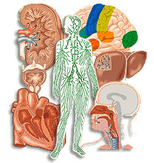
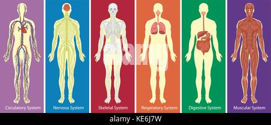
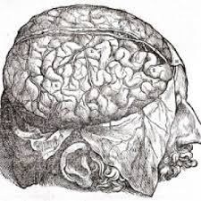

Anatomia Patologica.Es la especialidad de la medicina que se ocupa del estudio de las causas, desarrollo y consecuencias de múltiples enfermedades utilizando técnicas morfológicas.  |
Anatomia Morfologica.Es la disciplina encargada del estudio de la estructura de un organismo o taxón y sus componentes o características. Esto incluye aspectos físicos de la apariencia externa (forma, color, estructura) así como aspectos de la estructura interna del organismo como huesos y órganos.  |
Anatomia Descriptiva.Es la disciplina de la anatomía que estudia los elementos del cuerpo humano y cuerpo animal, dividiéndolos en sistemas ,describiendo su situación, su forma, sus relaciones, su constitución y estructura, su vascularización e inervación.  |